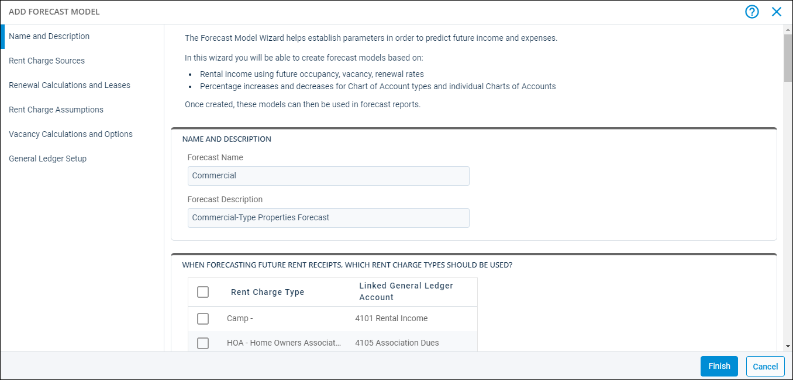
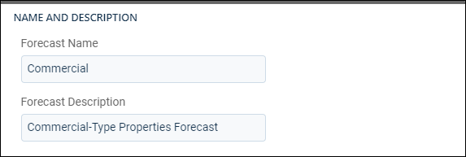
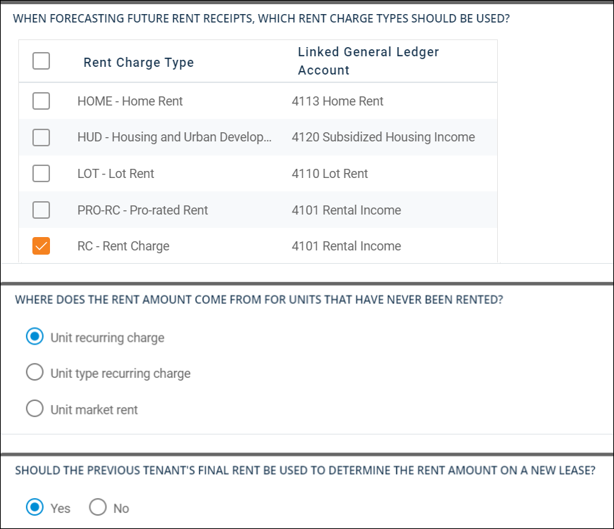
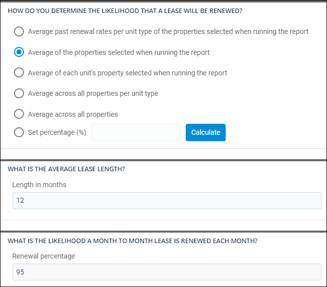
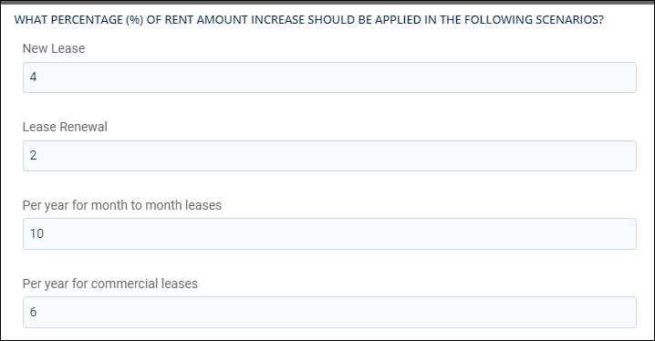
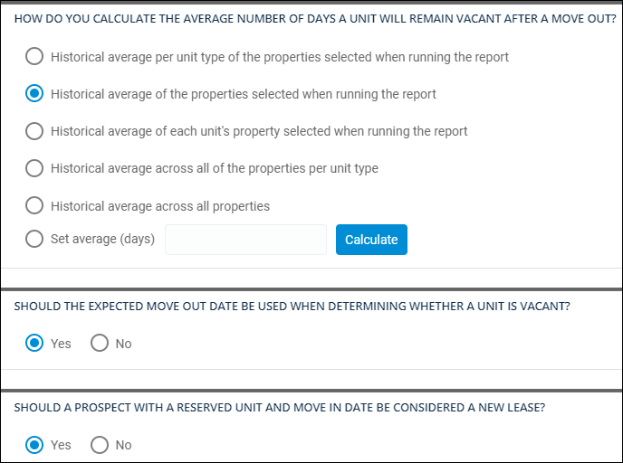
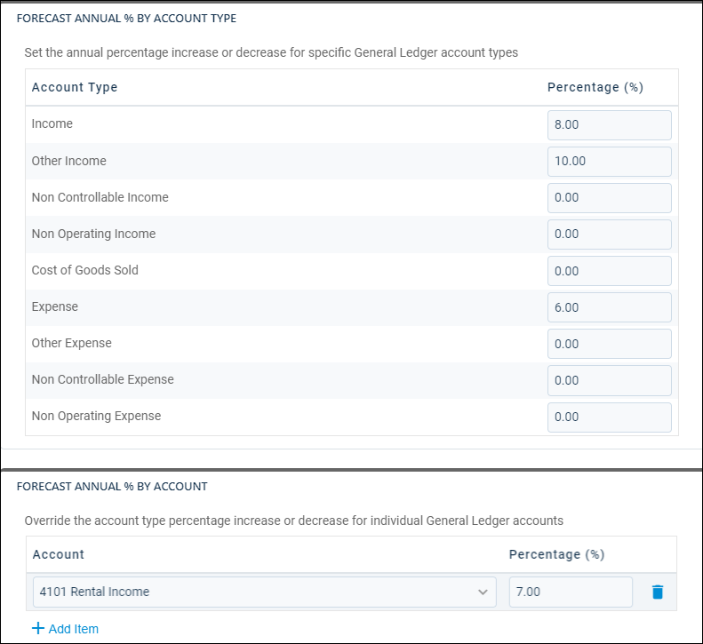

Source: https://rmxhelp.rentmanager.com/Topics/Express/Other/Forecast-Model-Add.htm
Add a Forecast Model
Forecast models project future earnings and expenses in scenarios where operating expenses as well as comprehensive rental, vacancy, and renewal options are considered. Creating multiple models, such as projections where the business exceeds expectations as well as fails to meet those expectations, can provide valuable insight into how to plan for expenses and the rental rate adjustments needed to maintain profitability through the Profit & Loss Forecast report.
You can add new forecast models to your Rent Manager database with the Add Forecast Model wizard. For example, you may wish to create a forecast model for each portfolio type you manage (e.g., commercial, student housing, manufactured housing).
Related Privileges
| Group | Privilege | Column |
|---|---|---|
| Setup | Forecast Models | Add, View |
For more information, refer to Control User Access.

Step 1: Create a New Forecast Model
To add a forecast model, do the following:
-
Go to
 arrow_forward Accounting arrow_forward Accounting Setup arrow_forward General arrow_forward Forecast Models.
arrow_forward Accounting arrow_forward Accounting Setup arrow_forward General arrow_forward Forecast Models.
The Forecast Models page displays. -
Click
 Add Forecast Model.
Add Forecast Model.
-
Enter a name and description for the forecast model.
Step 2: Select Rent Charge Types
In this section, select which rent charge types are used in projections. Rent charge types are pulled from the property's details page in the Rent Charge Type field.

To set up rent charge sources, do the following:
-
Uncheck each Rent Charge Type you do not want to include in the forecast model. The cumulative amount of all selected Rent Charge Types are used to determine each unit's projected rental rate. By default, all Rent Charge Types are checked.
-
Select one of the following options for how Rent Manager determines rental charges for units that have never been rented before:
Option Description Unit recurring charge
Includes all rent charge types selected in the section above that are unit-level recurring charges.
Unit type recurring charge
Includes all rent charge types selected in the section above that are unit type-level recurring charges.
Unit market rent
Uses the unit market rent as entered on the unit's View Market Rent pop-up.
-
Choose if the previous tenant's final rent is used to determine the rent amount on a new lease:
Option Description Yes
Any previously rented unit uses the cumulative total of the most recent designated recurring rent charge types assessed to the last tenant.
No
The source of rent charges selected above is used.
Step 3: Enter Lease Information
In this section, determine how average renewal rates for leases are calculated for the Profit & Loss Forecast report and enter information about your company's average lease lengths and renewal rates.

To enter lease information, do the following:
-
Select one of the following options for determining the likelihood that a lease will be renewed:
Option Description Average past renewal rates per unit type of the properties selected when running the report
Includes only the properties selected in the Profit & Loss Forecast report options and calculates the consolidated average of renewals per unit type.
For businesses with large differences between renewal rates in unit types, this may be a more accurate option.
Average of the properties selected when running the report
Includes only the properties selected in the Profit & Loss Forecast report options when calculating the average renewal rate. This results in a fixed renewal rate for the entire report.
Average of each unit's property selected when running the report
Includes the average of each of the properties selected in the Profit & Loss Forecast report options when calculating the average renewal rate. This results in an independent renewal rate per property in the report.
Average across all properties per unit type
Includes all properties in the database and calculates the consolidated average of renewals per unit type. If you select inactive properties in the Profit & Loss Forecast report options, those are also included.
For businesses with large differences between renewal rates in unit types, this may be a more accurate option.
Average across all properties
Includes all properties in the database when calculating the average renewal rate. If you select inactive properties in the Profit & Loss Forecast report options, those are also included. This results in a fixed renewal rate for the entire report.
Set percentage (%)
Manually input a percentage of your choosing, or examine your historical data to calculate an average renewal rate.
To examine your database for the historical renewal rate, do the following:
-
Click Calculate.
The Calculate Renewal Rate Percentage pop-up opens. -
In the Properties field, check the properties to include in the renewal rate calculation. To quickly select all properties, check the box in the header. Alternatively, select a property Group from the drop-down menu.
-
In the Years to include field, enter the number of years of data to include in the calculation.
-
Click Calculate.
The renewal rate percentage is displayed. -
Click OK to close the window and populate the Set percentage (%) field with the calculation, or click Cancel to close the window without populating the field.
-
-
Enter the average Length in months that your leases usually last.
-
Enter your Renewal percentage, which is the percentage of your tenants with month-to-month leases that do not move out each month.
Step 4: Enter Rent Charge Assumptions
In this section, determine rent increases per year for specified lease types.

Enter values in the following fields:
| Field | Description |
|---|---|
|
New Lease |
The increase, as a percentage, on the designated rent charge types that a tenant signing a new lease is charged. When calculated in the Profit & Loss Forecast report, the current lease (for an occupied unit) or the next lease (for a vacant unit) is calculated without this increase. All subsequent leases reflect the entered increased percentage. |
|
Lease Renewal |
The increase, as a percentage, on the designated rent charge types that a tenant renewing their existing lease is charged. When calculated in the Profit & Loss Forecast report, projected leases see a renewal increase on the first of the month after the renewal date. |
|
Per year for month to month leases |
The increase, as a percentage, on the designated rent charge types that a tenant who has a month-to-month lease is charged. When calculated in the Profit & Loss Forecast report, projected leases see a renewal increase on the first of the month after a full year passes based on the lease start date. |
|
Per year for commercial leases |
The increase, as a percentage, on the designated rent charge types that a tenant who has a commercial lease is charged. When calculated in the Profit & Loss Forecast report, projected leases see a renewal increase on the first of the month after a full year passes based on the lease start date. |
Step 5: Set Up Vacancy Calculations
In this section, determine projections for how long units remain vacant and select options for how to handle move-out dates and reserved units.

To set up vacancy calculations, do the following:
-
Select one of the following options for how to calculate the number of days a units is vacant after move out:
Option Description Historical average per unit type of the properties selected when running the report
Includes only the properties selected in the Profit & Loss Forecast report options and calculates the consolidated average of days vacant per unit type.
For businesses with large differences between vacancy lengths in unit types, this may be a more accurate option.
Historical average of the properties selected when running the report
Includes only the properties selected in the Profit & Loss Forecast report options when calculating the average days vacant. This results in a fixed vacancy rate for the entire report.
Historical average of each unit's property selected when running the report
Includes the average of each of the properties selected in the Profit & Loss Forecast report options when calculating the average days vacant. This results in an independent number of days vacant per property for the entire report.
Historical average across all properties per unit type
Includes all properties in the database and calculates the consolidated average of days vacant per unit type. If you select inactive properties in the Profit & Loss Forecast report options, those are also included.
For businesses with large differences between vacancy lengths in unit types, this may be a more accurate option.
Historical average across all properties
Includes all properties in the database when calculating the average vacancy length. If you select inactive properties in the Profit & Loss Forecast report options, those are also included. This results in a fixed vacancy rate for the entire report.
Set average (days)
Manually input a number of days of your choosing, or examine your historical data to calculate an average number of days vacant.
To examine your database for the historical vacancy length, follow these steps:
-
Click Calculate.
The Calculate Average Days Vacant pop-up opens. -
In the Properties field, check the properties to include in the renewal rate calculation. To quickly select all properties, check the box in the header. Alternatively, select a property Group from the drop-down list.
-
In the Years to include field, enter the number of years of data to include in the calculation.
-
Click Calculate.
The average number of days vacant for the selected properties is displayed. -
Click OK to close the window and populate the Set average (days) field with the calculation, or click Cancel to close the window without populating the field.
-
-
Select one of the following options for how to determine if a unit is vacant:
Option Description Yes
Any unit with no Move Out Date on the tenant's details page defaults to the Expected Move Out Date. If an Expected Move Out Date is entered, the report uses that date for projections.
No
The unit is considered vacant only after a set Move Out Date.
-
Select one of the following options for how to handle prospective renters in the forecast model:
Option Description Yes
A vacant unit that is reserved by a prospect calculates as occupied from the Expected Move In date.
No
The unit is considered vacant until a Move In Date is selected on a tenant record.
Step 6: Select Chart Account Types
In this section, determine increases and decreases for general ledger (GL) expenses and income.
More Information
The forecast model first reviews your entries in the previous sections of the wizard for how to determine rental income, as entered in the Rent Charge Assumptions section. If you did not specify a rental increase, the model examines the specific GL account for rental income. If the specific GL account does not show a change, the model examines the GL account type for changes.

To set up GL account increases or decreases, do the following:
-
In the top section, enter a Percentage (%) change for major GL account types, such as Income, Expense, and so on.
-
In the bottom section, click
 Add Item to select an individual GL Account, such as Rental Income or Building Insurance, and enter a Percentage (%) change to fine-tune the change rate for just that one account. Add as many GL accounts as needed.
Add Item to select an individual GL Account, such as Rental Income or Building Insurance, and enter a Percentage (%) change to fine-tune the change rate for just that one account. Add as many GL accounts as needed.
Step 7: Finish the Forecast Model
After you review and ensure all information is accurate, click Finish.
Your forecast model is added to the Forecast Models page and can now be selected in reports.